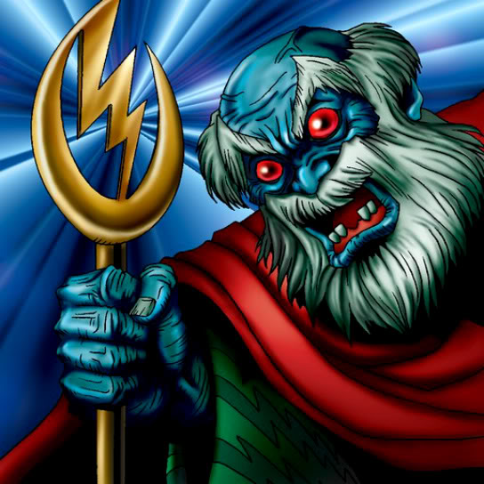

The Immortal of Thunder

Description: "While this card is face-up in the defense position, all female monsters are reduced by 500 points."
STATS
ATK: 1500
DEF: 1300DECK COST
Deck Cost per Card: 33EFFECT NOT IMPLEMENTED
Fusion List (33 Possible Fusions)
- The Immortal of Thunder + Fairywitch = Kaminari Attack
- The Immortal of Thunder + Baby Dragon = Thunder Dragon
- The Immortal of Thunder + B. Dragon Jungle King = Twin-Headed Thunder Dragon
- The Immortal of Thunder + Blackland Fire Dragon = Thunder Dragon
- The Immortal of Thunder + Boo Koo = Kaminari Attack
- The Immortal of Thunder + Crawling Dragon #2 = Twin-Headed Thunder Dragon
- The Immortal of Thunder + Crawling Dragon = Twin-Headed Thunder Dragon
- The Immortal of Thunder + Curse of Dragon = Twin-Headed Thunder Dragon
- The Immortal of Thunder + Darkfire Dragon = Thunder Dragon
- The Immortal of Thunder + Gaia the Dragon Champion = Twin-Headed Thunder Dragon
- The Immortal of Thunder + Ill Witch = Kaminari Attack
- The Immortal of Thunder + Kageningen = Kaminari Attack
- The Immortal of Thunder + Kairyu-Shin = Twin-Headed Thunder Dragon
- The Immortal of Thunder + Kaiser Dragon = Twin-Headed Thunder Dragon
- The Immortal of Thunder + Kamionwizard = Kaminari Attack
- The Immortal of Thunder + Lucky Trinket = Kaminari Attack
- The Immortal of Thunder + Maha Vailo = Kaminari Attack
- The Immortal of Thunder + Metal Dragon = Twin-Headed Thunder Dragon
- The Immortal of Thunder + Meteor Dragon = Twin-Headed Thunder Dragon
- The Immortal of Thunder + Mystic Lamp = Kaminari Attack
- The Immortal of Thunder + One-Eyed Shield Dragon = Thunder Dragon
- The Immortal of Thunder + Parrot Dragon = Twin-Headed Thunder Dragon
- The Immortal of Thunder + Petit Dragon = Thunder Dragon
- The Immortal of Thunder + Red-Eyes B. Dragon = Twin-Headed Thunder Dragon
- The Immortal of Thunder + Sea King Dragon = Twin-Headed Thunder Dragon
- The Immortal of Thunder + Sectarian of Secrets = Kaminari Attack
- The Immortal of Thunder + Seiyaryu = Twin-Headed Thunder Dragon
- The Immortal of Thunder + Skelgon = Twin-Headed Thunder Dragon
- The Immortal of Thunder + Stone D. = Twin-Headed Thunder Dragon
- The Immortal of Thunder + Sword Arm of Dragon = Twin-Headed Thunder Dragon
- The Immortal of Thunder + Thousand Dragon = Twin-Headed Thunder Dragon
- The Immortal of Thunder + Time Wizard = Kaminari Attack
- The Immortal of Thunder + Yamatano Dragon Scroll = Thunder Dragon